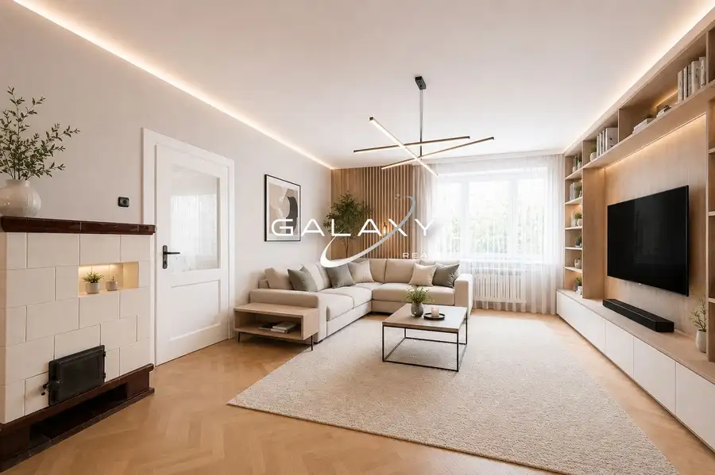
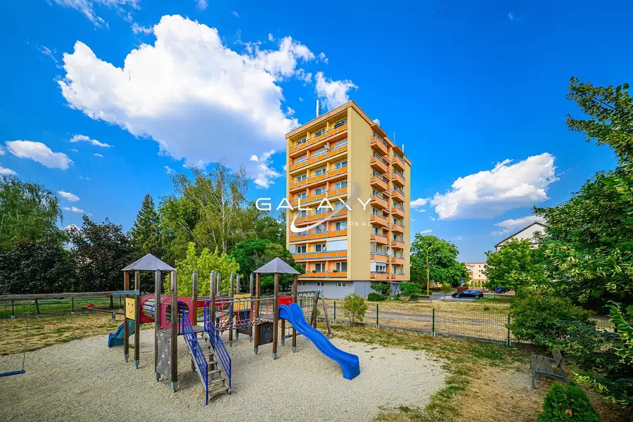
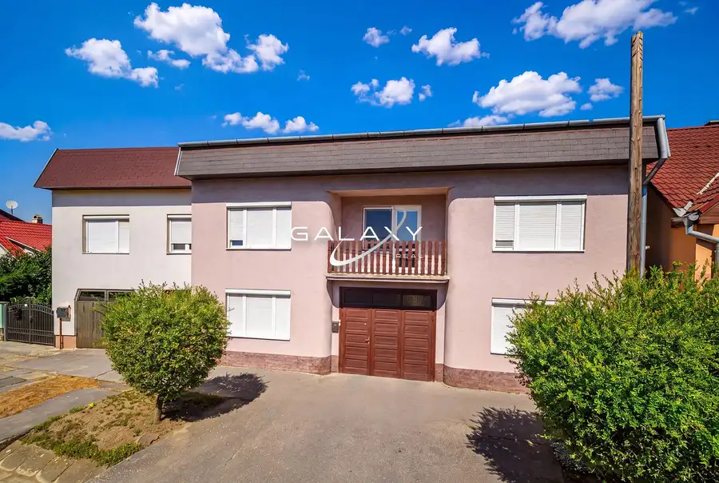

Čiastočne zrekonštruovaný 4-izbový rodinný dom – Šíd
Šíd
- Dispozícia4-izbový
- Plocha164 m²
- Poschodie0. z 2
- Stavčiastočne prerobený
- Vlastníctvoosobné
O nehnuteľnosti
Dom má zrekonštruovaný interiér, je v zachovalom stave a je pripravený na okamžité bývanie, zároveň poskytuje dostatok miesta pre pohodlný každodenný život.
✅ Čo vás zaujme:
• výmera 164 m² – praktická dispozícia
• zrekonštruovaný interiér domu
• obývačka prepojená s kuchyňou
• 3 izby
• kúpeľňa s rohovou vaňou a WC
• kúpeľňa so sprchovým kútom a WC
• samostatná práčovňa
• 2 balkóny
• priestranný sklad s kotolňou
• samostatná garáž
• prístrešok pre 2 autá
• pozemok 1 272 m²
• možnosť okamžitého bývania
✅ Lokalita:
Šíd je v bezprostrednej blízkosti Fiľakova. Ponúka príjemné bývanie v pokojnejšom prostredí a zároveň výbornú dostupnosť kompletnej občianskej vybavenosti. V dobrej dostupnosti nájdete aj možnosti oddychu a aktívneho trávenia voľného času.
✅ Cena: 79 900€
(vrátane kompletného právneho a predajného servisu)
Nenechajte si ujsť túto zaujímavú príležitosť bývať v priestrannom rodinnom dome s praktickým zázemím.
Neváhajte ma kontaktovať, rada vám tento dom osobne predstavím.
Mária Tóthová Jakubová │ GALAXY REAL
Tel.:
E-mail:
Člen REALITNEJ ÚNIE SR – garancia kvality a profesionálneho prístupu
#DomNaPredaj #Šíd #RodinnyDom #Fiľakovo #PriestrannyDom #VelkyPozemok #RodinneByvanie #ByvajsGalaxyReal
Parametre
| Rozloha pozemku | 1272 m² |
|---|---|
| Zastavaná plocha | 128 m² |
| Úžitková plocha | 164 m² |
| Poschodie | prízemie |
| Počet poschodí | 2 |
| Počet izieb | 4 |
| Vlastníctvo | osobné |
| Stav | čiastočne prerobený |
| Voda | verejný vodovod |
| El. napätie | 230/400V |
| Plyn | áno |
| Kanalizácia | žumpa |
| Vykurovanie | vlastné - pevné palivo |
| Balkón | áno - 2 |
| Garáž | áno |
| Parkovanie | vonkajšie |
| Postavené z | tehla |
| Energetický certifikát | nie |
| Terén | mierny svah |
| Dátum zverejnenia | 4. 9. 2026 |
Kde to je
Mohlo by Vás zaujímať

Rodinné domy10 69 900 €NOVÁ CENA - Rodinný dom s veľkým potenciálom – Fiľakovo Fiľakovo 74 m² Ponúkame na predaj rodinný dom vo výborne dostupnej lokalite Fiľakova, ktorý ponúka zaujímavý základ pre vytvorenie vlastného bývania alebo…
Byt9 85 900 €Priestranný 3-i byt s 3 loggiami po rekonštrukcii – centrum Fiľakova Fiľakovo 3-izbový73 m²1. podlažie Na Školskej ulici na vás čaká kompletne zrekonštruovaný 3-izbový byt s tromi loggiami a balkónom, ktorý spája praktickú dispozíciu s výbornou…
Rodinné domy10 159 000 €Priestranný rodinný dom s 3 bytmi a veľkým pozemkom – Biskupice Biskupice 9-izbový288 m² Ponúkame vám na predaj rodinný dom v Biskupiciach, ktorý zaujme predovšetkým svojou výmerou 288 m², zaujímavým dispozičným riešením a veľkorysým…